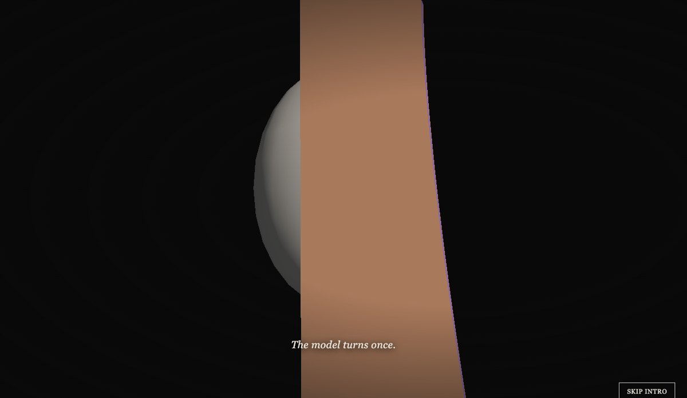
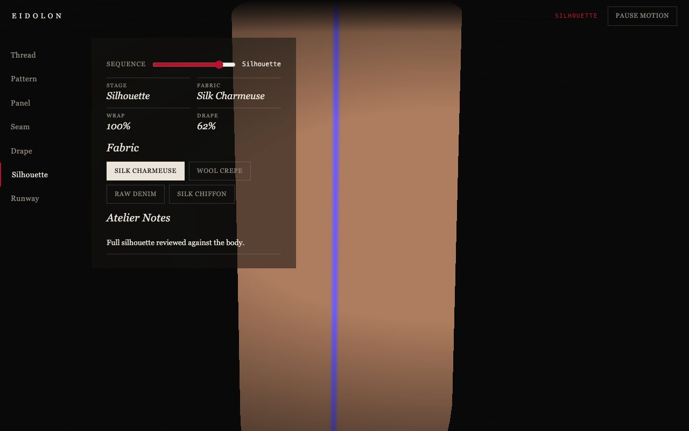
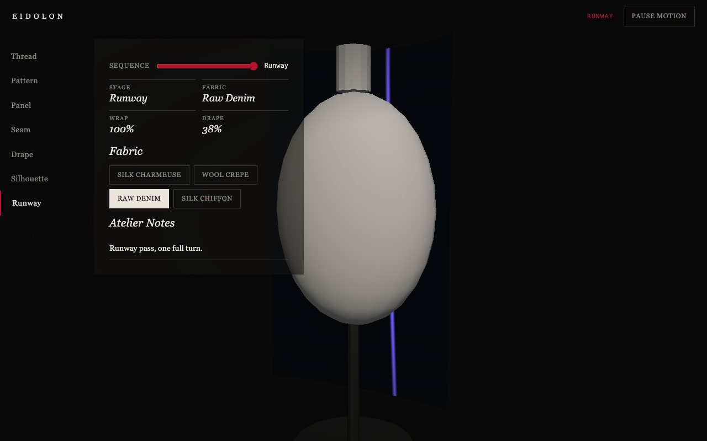

Blender · three.js · motion design · 2026-10
What Does One Mesh Look Like Across Seven Garment Stages?
A digital couture and material physics atelier: a single plane mesh carries a garment through Thread, Pattern, Panel, Seam, Drape, Silhouette and Runway with one vertex shader, and switching fabric swatches changes both color and drape physics, not just a tint.

Built from blueprint 05 of a written build book (Advanced Engineering Build Book, Volume VIII) as one vertical slice, using the five-tool-design-pipeline skill: an Awesome Design file for type/spacing scale (serif/italic, unlike the volume's other blueprints), the Taste/Impeccable checklist, Playwright including a rendered-pixel-color check for the fabric-swatch feature, Three.js as the product. Everything is synthetic: the four fabric swatches and atelier notes come from a seeded generator, and the drape is a closed-form shader function, not a real cloth solver. Not built: a real physics-based cloth simulation (Rapier or otherwise), Houdini, Marvelous Designer, auth.
01 — The problem
The book's rule for this blueprint is that every stage has to transform the same garment representation, and a fabric swatch change has to alter drape, not just color. The obvious shortcut, swapping in a different model per stage, fails the brief outright.
02 — What I built
One repository with the whole pipeline.
- A scripted asset:
model/build.pybuilds a dress-form mannequin and a thread spool, exports GLBs, renders a poster. - A domain model: wrap amount, drape amount (fabric-stiffness-aware) and runway walk phase, all pure functions of one timeline value, unit-tested.
- A browser runtime where the garment is one
PlaneGeometrywhose vertex shader mixes between a flat pattern layout and a body-wrapped layout, adds a stiffness-aware sag, and pulls the panel halves together as the seam approaches - entirely via shader uniforms, no geometry swap. - An intro that sews a thread into a seam, grows the fabric, drapes it around an invisible body, turns the model once, and explodes it back into pattern pieces before handing off to the atelier.
- Fallbacks: poster for no WebGL, static keyframes for reduced motion.
03 — How it was built
- 01
One mesh, not seven
The entire Thread-to-Runway sequence is one
PlaneGeometry.uWrapmixes between a flat pattern position and a cylindrical body-wrapped position;uDrapeadds a sag term that grows from the seam stage onward;uSewpulls the two panel halves together early in the sequence. Nothing is swapped, only uniforms change.vec3 flatP = vec3(cx * 1.3, (0.5 - uv.y) * 1.7 + 1.0, 0.0); vec3 wrapP = vec3(sin(angle) * radius, flatP.y, cos(angle) * radius - radius * 0.3); vec3 p = mix(flatP, wrapP, uWrap); - 02
Fabric changes physics, not just a tint
drapeAmountAt(t, stiffness)reduces the sag amplitude as stiffness rises, so switching from Silk Charmeuse (stiffness 0.08) to Raw Denim (0.78) visibly flattens the drape at the same sequence position. A pixel-sampling e2e test (not just a DOM readout) asserts the rendered garment actually changes shape when the swatch changes. - 03
A test-flake found and fixed
A keyboard-activation test focused a nav button immediately after
page.goto(), before React's first real render replaced the DOM node the focus had landed on. Fixed by waiting for the HUD to be visible first. Documented indocs/qa-report.mdin case the earlier blueprints' equivalent tests start showing the same flake under load.
04 — Results
The silhouette stage, Silk Charmeuse:

The runway stage, Raw Denim:

Checks. 10 unit and API tests, 19 Playwright tests including the fabric pixel-sample check, clean typecheck.
Performance, SwiftShader (no GPU claim). 5 draw calls, 2,204 triangles (the garment's 24x32 subdivision for a smooth drape curve); 565 KB gzipped JS. Median 16.7 ms per frame.
05 — What I'd do next
- Measure on a physical GPU and a mid-range phone.
- Replace the closed-form drape shader with a real constraint-based cloth solver (the book's Rapier suggestion) for a physically accurate fall.
- Add a second camera angle for the runway turn instead of a single fixed viewpoint.